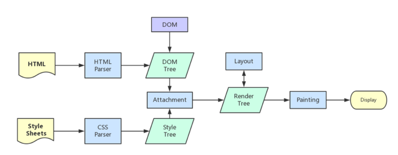
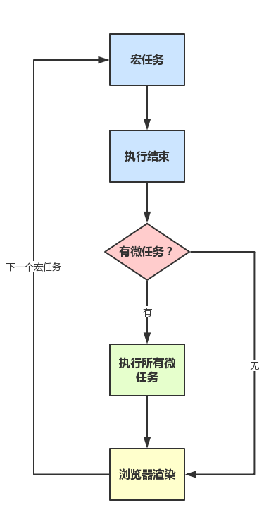

从输入URL到页面加载发生了什么?
总体来说分为以下几个过程:
- DNS解析
- TCP连接
- 发送HTTP请求
- 服务器处理请求并返回HTTP报文
- 浏览器解析渲染页面
- 连接结束
在此之前的准备
从输入URL到页面加载的过程？如何由一道题完善自己的前端知识体系！666
level3:
基本能到这一步的，不是高阶就是接近高阶，因为很多概念并不是靠背就能理解的，而要理解这么多，需形成体系，一般都需要积累，非一日之功。
一般包括什么样的回答呢？（这里就以自己的简略回答进行举例），一般这个阶段的人员都会符合若干条（不一定全部，当然可能还有些是这里遗漏的）:
- 首先略去那些键盘输入、和操作系统交互、以及屏幕显示原理、网卡等硬件交互之类的（前端向中，很多硬件原理暂时略去。。。）
- 对浏览器模型有整体概念，知道浏览器是多进程的，浏览器内核是多线程的，清楚进程与线程之间得区别，以及输入url后会开一个新的网络线程
- 对从开启网络线程到发出一个完整的http请求中间的过程有所了解（如dns查询，tcp/ip链接，五层因特尔协议栈等等，以及一些优化方案，如dns-prefetch）
- 对从服务器接收到请求到对应后台接收到请求有一定了解（如负载均衡，安全拦截以及后台代码处理等）
- 对后台和前台的http交互熟悉（包括http报文结构，场景头部，cookie，跨域，web安全，http缓存，http2.0，https等）
- 对浏览器接收到http数据包后的解析流程熟悉（包括解析html，词法分析然后解析成dom树、解析css生成css规则树、合并成render树，然后layout、painting渲染、里面可能还包括复合图层的合成、GPU绘制、外链处理、加载顺序等）
- 对JS引擎解析过程熟悉（包括JS的解释，预处理，执行上下文，VO，作用域链，this，回收机制等）
前端向知识的重点
此部分的内容是站在个人视角分析的，并不是说就一定是正确答案
首先明确，计算机方面的知识是可以无穷无尽的挖的，而本文的重点是梳理前端向的重点知识
对于前端向（这里可能没有提到node.js之类的，更多的是指客户端前端），这里将知识点按重要程度划分成以下几大类：
- 核心知识，必须掌握的，也是最基础的，譬如浏览器模型，渲染原理，JS解析过程，JS运行机制, JS引擎解析流程等，作为骨架来承载知识体系
- 重点知识，往往每一块都是一个知识点，而且这些知识点都很重要，譬如http相关，web安全相关，跨域处理等
- 拓展知识，这一块可能更多的是了解，稍微实践过，但是认识上可能没有上面那么深刻，譬如五层因特尔协议栈，hybrid模式，移动原生开发，后台相关等等（当然，在不同领域，可能有某些知识就上升到重点知识层次了，譬如hybrid开发时，懂原生开发是很重要的）
梳理主干流程
回到这道题上，如何回答呢？先梳理一个骨架
知识体系中，最重要的是骨架，脉络。有了骨架后，才方便填充细节。所以，先梳理下主干流程：
1 | 1. 从浏览器接收url到开启网络请求线程（这一部分可以展开浏览器的机制以及进程与线程之间的关系） |
核心知识梳理
多进程的浏览器
浏览器是多进程的，有一个主控进程，以及每一个tab页面都会新开一个进程（某些情况下多个tab会合并进程）
进程可能包括主控进程，插件进程，GPU，tab页（浏览器内核）等等
- Browser进程：浏览器的主进程（负责协调、主控），只有一个, 是其他进程的父进程
- 第三方插件进程：每种类型的插件对应一个进程，仅当使用该插件时才创建
- GPU进程：最多一个，用于3D绘制
- 浏览器渲染进程（内核）：默认每个Tab页面一个进程，互不影响，控制页面渲染，脚本执行，事件处理等（有时候会优化，如多个空白tab会合并成一个进程）
例如查看chrome的task manager: 在window => task manager
多线程的浏览器内核(浏览器渲染进程)
每一个tab页面可以看作是浏览器内核进程，然后这个进程是多线程的，它有几大类子线程
- GUI线程
- JS引擎线程
- 事件触发线程
- 定时器线程
- 网络请求线程
可以看到，里面的JS引擎是内核进程中的一个线程，这也是为什么常说JS引擎是单线程的
进程和线程区别
- 进程是cpu资源分配的最小单位（是能拥有资源和独立运行的最小单位）
- 线程是cpu调度的最小单位（线程是建立在进程的基础上的一次程序运行单位，一个进程中可以有多个线程）
打开mac的monitor可以看到一个进程中有多少线程, 系统按进程来分配资源. 点开详情可以看到父进程是什么
对于chrome这个程序而言, 他有一个主进程Google Chrome, 以及对应tab页的Google Chrome Helper
mac下chrome浏览器的标签页、进程和内存分配
这里可以看到一个主进程以及其他内核进程, 记得在monitor中按PID升序, 在chrome中的task manager中也是, 可以看到对应的.这里也更加确定了浏览器时多进程的(进程优化, 比如知乎的不是每个tab创建一个进程)
注意：在这里浏览器应该也有自己的优化机制，有时候打开多个tab页后，可以在Chrome任务管理器中看到，有些进程被合并了 (所以每一个Tab标签对应一个进程并不一定是绝对的, 比如知乎的那个进程）
通过monitor和task Manager去研究mac下chrome浏览器的标签页和进程的关系以及标签页的内存分配，发现chrome默认会启动一个主进程和两个子进程，之后每启动一个标签页会启动2个进程，加载完成后会结束一个。每个标签页都会分配实际内存和虚拟内存，当实际内存达到300M左右时，之后就只会分配虚拟内存。因为这种机制的存在，mac下页面还是没那么容易因为内存溢出而崩溃的，更多的要去关心windows下的内存占用情况。
浏览器多进程好处, 防止页面或第三方插件崩了就全崩了, 就是内存消耗多点.
浏览器内核(渲染进程)
对前端而言, 页面的渲染，JS的执行，事件的循环，都在这个进程内进行。还是来说说这个进程里面5个主要线程.
1 GUI渲染线程
- 负责渲染浏览器界面，解析HTML，CSS，构建DOM树和RenderObject树，布局和绘制等。
- 当界面需要重绘（
Repaint）或由于某种操作引发回流(reflow)时，该线程就会执行 - 注意，GUI渲染线程与JS引擎线程是互斥的，当JS引擎执行时GUI线程会被挂起（相当于被冻结了），GUI更新会被保存在一个队列中等到JS引擎空闲时立即被执行。
2 JS引擎线程
- 也称为JS内核，负责处理Javascript脚本程序。（例如V8引擎）
- JS引擎线程负责解析Javascript脚本，运行代码。
- JS引擎一直等待着任务队列中任务的到来，然后加以处理，一个Tab页（
renderer进程）中无论什么时候都只有一个JS线程在运行JS程序 - 同样注意，GUI渲染线程与JS引擎线程是互斥的，所以如果JS执行的时间过长，这样就会造成页面的渲染不连贯，导致页面渲染加载阻塞。
只是GUI渲染线程和JS引擎线程是互斥的
3 事件触发线程
- 归属于浏览器而不是JS引擎，用来
控制事件循环(可以理解，JS引擎自己都忙不过来，需要浏览器另开线程协助） - 当JS引擎执行代码块如
setTimeOut时（也可来自浏览器内核的其他线程,如鼠标点击、AJAX异步请求等），会将对应任务添加到事件线程中 - 当对应的事件符合触发条件被触发时，该线程会把事件添加到待处理队列的队尾，等待JS引擎的处理
- 注意，由于JS的单线程关系，所以这些待处理队列中的事件都得排队等待JS引擎处理（当JS引擎空闲时才会去执行）
4 定时触发器线程
- 传说中的
setInterval与setTimeout所在线程 - 浏览器定时计数器并不是由JavaScript引擎计数的,（因为JavaScript引擎是单线程的, 如果处于阻塞线程状态就会影响记计时的准确）
- 因此通过单独线程来计时并触发定时（计时完毕后，添加到事件队列中，等待JS引擎空闲后执行）
- 注意，W3C在HTML标准中规定，规定要求
setTimeout中低于4ms的时间间隔算为4ms。
5 异步http请求线程
- 在
XMLHttpRequest在连接后是通过浏览器新开一个线程请求 - 将检测到状态变更时，如果设置有回调函数，异步线程就产生状态变更事件，将这个回调再放入事件队列中。再由JavaScript引擎执行。
3.4.5都有事件队列哦, 可以并行的, 3还控制事件循环机制, 就1和2是互斥的, 其他可以并行.
补充: HTML5的 Web Worker线程
聊聊 JavaScript 与浏览器的那些事 - 引擎与线程
上面链接中的 一个浏览器的主要组件可分为如下几个部分这块不用看,看上面的多进程浏览器, 多线程内核就行, 免得糊涂, 最后也得出我们会更注重呈现引擎和
JavaScript解释器的部分. ]Web Worker允许JavaScript脚本创建多个线程，但是子线程完全受主线程控制，且不得操作 DOM 。所以，这个新标准并没有改变JavaScript单线程的本质。然后 注意定时器和异步是不同的线程控制哦
Browser进程和浏览器内核（Renderer进程）的通信过程(父进程和子进程之间通信)
那么接下来，再谈谈浏览器的Browser进程（控制进程）是如何和内核通信的，这点也理解后，就可以将这部分的知识串联起来，从头到尾有一个完整的概念。
如果自己打开任务管理器(Activity Monitor)，然后打开一个浏览器(chrome)，就可以看到：任务管理器中出现了两个进程（一个是主控进程(Google chrome)，一个则是打开Tab页的渲染进程Google Chrome Helper），
然后在这前提下，看下整个的过程：(简化了很多)
Browser进程收到用户请求，首先需要获取页面内容（譬如通过网络下载资源），随后将该任务通过RendererHost接口传递给Render进程Renderer进程的Renderer接口收到消息，简单解释后，交给渲染线程，然后开始渲染渲染线程接收请求，加载网页并渲染网页，这其中可能需要Browser进程获取资源和需要GPU进程来帮助渲染- 当然可能会有
JS线程操作DOM（这样可能会造成回流并重绘） - 最后
Render进程将结果传递给Browser进程
Browser进程接收到结果并将结果绘制出来
这里绘一张简单的图：（很简化）这里是进程不是线程

梳理浏览器内核中线程之间的关系
到了这里，已经对浏览器的运行有了一个整体的概念，接下来，先简单梳理一些概念, 在回顾下图.
GUI渲染线程与JS引擎线程互斥
由于JavaScript是可操纵DOM的，如果在修改这些元素属性同时渲染界面（即JS线程和UI线程同时运行），那么渲染线程前后获得的元素数据就可能不一致了。
因此为了防止渲染出现不可预期的结果，浏览器设置GUI渲染线程与JS引擎为互斥的关系，当JS引擎执行时GUI线程会被挂起，
GUI更新则会被保存在一个队列中等到JS引擎线程空闲时立即被执行。
JS阻塞页面加载
从上述的互斥关系，可以推导出，JS如果执行时间过长就会阻塞页面。
譬如，假设JS引擎正在进行巨量的计算，此时就算GUI有更新，也会被保存到队列中，等待JS引擎空闲后执行, 就是后面的task => 渲染 => task。
然后，由于巨量计算，所以JS引擎很可能很久很久后才能空闲，自然会感觉到巨卡无比。
所以，要尽量避免JS执行时间过长，这样就会造成页面的渲染不连贯，导致页面渲染加载阻塞的感觉。
WebWorker，JS的多线程？
前文中有提到JS引擎是单线程的，而且JS执行时间过长会阻塞页面，那么JS就真的对cpu密集型计算无能为力么？
所以，后来HTML5中支持了Web Worker。
MDN的官方解释是：
Web Worker为Web内容在后台线程中运行脚本提供了一种简单的方法。线程可以执行任务而不干扰用户界面
一个worker是使用一个构造函数创建的一个对象(e.g.Worker()) 运行一个命名的JavaScript文件
这个文件包含将在工作线程中运行的代码;workers运行在另一个全局上下文中,不同于当前的window
因此，使用 window快捷方式获取当前全局的范围 (而不是self) 在一个Worker内将返回错误
这样理解下：
- 创建
Worker时，JS引擎线程向浏览器申请开一个子线程（子线程是浏览器开的，完全受主线程控制，而且不能操作DOM） JS引擎线程与worker线程间通过特定的方式通信（postMessage API，需要通过序列化对象来与线程交互特定的数据）
所以，如果有非常耗时的工作，请单独开一个Worker线程，这样里面不管如何翻天覆地都不会影响JS引擎主线程，
只待计算出结果后，将结果通信给主线程即可，perfect!
而且注意下，JS引擎是单线程的，这一点的本质仍然未改变，Worker可以理解是浏览器给JS引擎开的外挂，专门用来解决那些大量计算问题。
其它，关于Worker的详解就不是本文的范畴了，因此不再赘述。
WebWorker与SharedWorker
既然都到了这里，就再提一下SharedWorker（避免后续将这两个概念搞混）
WebWorker只属于某个页面，不会和其他页面的Render进程（浏览器内核进程）共享
所以Chrome在Render进程中（每一个Tab页就是一个render进程）创建一个新的线程来运行Worker中的JavaScript程序。
SharedWorker是浏览器所有页面共享的，不能采用与Worker同样的方式实现，因为它不隶属于某个Render进程，可以为多个Render进程共享使用
所以Chrome浏览器为SharedWorker单独创建一个进程来运行JavaScript程序，在浏览器中每个相同的JavaScript只存在一个SharedWorker进程，不管它被创建多少次。
看到这里，应该就很容易明白了，本质上就是进程和线程的区别。SharedWorker由独立的进程管理，WebWorker只是属于render进程下的一个线程.
简单梳理下浏览器渲染流程
为了简化理解，前期工作直接省略成：
- 浏览器输入url，浏览器主进程接管，开一个下载线程，
- 然后进行 http请求（略去DNS查询，IP寻址等等操作），然后等待响应，获取内容，
- 随后将内容通过RendererHost接口转交给
Renderer进程 - 浏览器渲染流程开始
浏览器器内核拿到内容后，渲染大概可以划分成以下几个步骤：
- 解析
html建立dom树 - 再解析
css一起构建render树（将CSS代码解析成树形的数据结构，然后结合DOM合并成render树） - 布局render树（Layout/reflow），负责各元素尺寸、位置的计算
- 绘制render树（paint），绘制页面像素信息
- 浏览器会将各层的信息发送给
GPU，GPU会将各层合成（composite），显示在屏幕上。
所有详细步骤都已经略去，渲染完毕后就是load事件了，之后就是自己的JS逻辑处理了
既然略去了一些详细的步骤，那么就提一些可能需要注意的细节把。
这里重绘参考来源中的一张图：（参考来源第一篇）

上面链接讲了js和会作用在
DOM tree和style rules, 讲的细点.
load事件与DOMContentLoaded事件的先后
上面提到，渲染完毕后会触发load事件，那么你能分清楚load事件与DOMContentLoaded事件的先后么？
很简单，知道它们的定义就可以了：
当 DOMContentLoaded 事件触发时，仅当DOM加载完成，不包括样式表，图片。
(譬如如果有async加载的脚本就不一定完成)
当 onload 事件触发时，页面上所有的DOM，样式表，脚本，图片都已经加载完成了。
（渲染完毕了）
所以，顺序是：DOMContentLoaded -> load
css加载会造成阻塞吗 看这个链接里的DOMContentLoaded, css会阻塞Dom渲染和js执行，而js会阻塞Dom解析。
- 如果页面中同时存在
css和js，并且存在js在css后面，则DOMContentLoaded事件会在css加载完后才执行。(加载完全部css么?) - 其他情况下，
DOMContentLoaded都不会等待css加载，并且DOMContentLoaded事件也不会等待图片、视频等其他资源加载。
css加载是否会阻塞dom树渲染？
这里说的是头部引入css的情况
首先，我们都知道：css是由单独的下载线程异步下载的。
然后再说下几个现象：
- css加载不会阻塞DOM树解析（异步加载时DOM照常构建）
- 但会阻塞render树渲染（渲染时需等css加载完毕，因为render树需要css信息）
这可能也是浏览器的一种优化机制。
因为你加载css的时候，可能会修改下面DOM节点的样式，
如果css加载不阻塞render树渲染的话，那么当css加载完之后，
render树可能又得重新重绘或者回流了，这就造成了一些没有必要的损耗。
所以干脆就先把DOM树的结构先解析完，把可以做的工作做完，然后等你css加载完之后，
在根据最终的样式来渲染render树，这种做法性能方面确实会比较好一点。
普通图层和复合图层
渲染步骤中就提到了composite概念。
可以简单的这样理解，浏览器渲染的图层一般包含两大类：普通图层以及复合图层
首先，普通文档流内可以理解为一个复合图层（这里称为默认复合层，里面不管添加多少元素，其实都是在同一个复合图层中）
其次，absolute布局（fixed也一样），虽然可以脱离普通文档流，但它仍然属于默认复合层。
然后，可以通过硬件加速的方式，声明一个新的复合图层，它会单独分配资源
（当然也会脱离普通文档流，这样一来，不管这个复合图层中怎么变化，也不会影响默认复合层里的回流重绘）
可以简单理解下：GPU中，各个复合图层是单独绘制的，所以互不影响，这也是为什么某些场景硬件加速效果一级棒
可以Chrome源码调试 -> More Tools -> Rendering -> Layer borders中看到，黄色的就是复合图层信息
如何变成复合图层（硬件加速）
将该元素变成一个复合图层，就是传说中的硬件加速技术
- 最常用的方式：
translate3d、translateZ opacity属性/过渡动画（需要动画执行的过程中才会创建合成层，动画没有开始或结束后元素还会回到之前的状态）will-chang属性（这个比较偏僻），一般配合opacity与translate使用（而且经测试，除了上述可以引发硬件加速的属性外，其它属性并不会变成复合层），
作用是提前告诉浏览器要变化，这样浏览器会开始做一些优化工作（这个最好用完后就释放）
<video><iframe><canvas><webgl>等元素- 其它，譬如以前的flash插件
absolute和硬件加速的区别
可以看到，absolute虽然可以脱离普通文档流，但是无法脱离默认复合层。
所以，就算absolute中信息改变时不会改变普通文档流中render树，
但是，浏览器最终绘制时，是整个复合层绘制的，所以absolute中信息的改变，仍然会影响整个复合层的绘制。
（浏览器会重绘它，如果复合层中内容多，absolute带来的绘制信息变化过大，资源消耗是非常严重的）
而硬件加速直接就是在另一个复合层了（另起炉灶），所以它的信息改变不会影响默认复合层
（当然了，内部肯定会影响属于自己的复合层），仅仅是引发最后的合成（输出视图）
复合图层的作用？
一般一个元素开启硬件加速后会变成复合图层，可以独立于普通文档流中，改动后可以避免整个页面重绘，提升性能
但是尽量不要大量使用复合图层，否则由于资源消耗过度，页面反而会变的更卡
硬件加速时请使用index
使用硬件加速时，尽可能的使用index，防止浏览器默认给后续的元素创建复合层渲染
具体的原理时这样的：
webkit CSS3中，如果这个元素添加了硬件加速，并且index层级比较低，
那么在这个元素的后面其它元素（层级比这个元素高的，或者相同的，并且releative或absolute属性相同的），
会默认变为复合层渲染，如果处理不当会极大的影响性能
简单点理解，其实可以认为是一个隐式合成的概念：如果a是一个复合图层，而且b在a上面，那么b也会被隐式转为一个复合图层，这点需要特别注意
另外，这个问题可以在这个地址看到重现（原作者分析的挺到位的，直接上链接）：
从Event Loop谈JS的运行机制
到此时，已经是属于浏览器页面初次渲染完毕后的事情，JS引擎的一些运行机制分析。
注意，这里不谈可执行上下文，VO，scope chain等概念（这些完全可以整理成另一篇文章了），这里主要是结合Event Loop来谈JS代码是如何执行的。
读这部分的前提是已经知道了JS引擎是单线程，而且这里会用到上文中的几个概念：（如果不是很理解，可以回头温习）
- JS引擎线程
- 事件触发线程
- 定时触发器线程
然后再理解一个概念：
- JS分
同步任务和异步任务 同步任务都在主线程上执行，形成一个执行栈- 主线程之外，事件触发线程管理着一个任务队列，只要
异步任务有了运行结果，就在任务队列之中放置一个事件。 - 一旦执行栈中的所有同步任务执行完毕（此时JS引擎空闲），系统就会读取任务队列，将可运行的异步任务添加到可执行栈中，开始执行。
看图：

看到这里，应该就可以理解了：为什么有时候setTimeout推入的事件不能准时执行？因为可能在它推入到事件列表时，主线程还不空闲，正在执行其它代码，所以自然有误差。
JavaScript 运行机制详解：再谈Event Loop 666
当然看了
microtask就知道task => 渲染 => task这个套路
事件循环机制进一步补充
这里就直接引用一张图片来协助理解：（参考自Philip Roberts的演讲《Help, I’m stuck in an event-loop》）

one thread == one call stack == one thing at a time执行栈就是task,任务队列就是task queue, 然后进行event loop
也有是 Event Table 和 Event Queue
上图大致描述就是：
- 主线程运行时会产生执行栈，
- 栈中的代码调用某些api(
定时, 异步, 事件)时，它们会在事件队列中添加各种事件（当满足触发条件后，如ajax请求完毕后才推入事件队列） - 而栈中的代码执行完毕，就会读取事件队列中的事件，去执行那些回调
- 如此循环
注意，总是要等待栈中的代码执行完毕后才会去读取事件队列中的事件
单独说说定时器
上述事件循环机制的核心是：JS引擎线程和事件触发线程
但事件上，里面还有一些隐藏细节，譬如调用setTimeout后，是如何等待特定时间后才添加到事件队列中的？
是JS引擎检测的么？当然不是了。它是由定时器线程控制（因为JS引擎自己都忙不过来，根本无暇分身）
为什么要单独的定时器线程？因为JavaScript引擎是单线程的, 如果处于阻塞线程状态就会影响记计时的准确，因此很有必要单独开一个线程用来计时。
什么时候会用到定时器线程？当使用setTimeout或setInterval时，它需要定时器线程计时，计时完成后就会将特定的事件推入事件队列中。
譬如:
1 | setTimeout(function(){ |
这段代码的作用是当1000毫秒计时完毕后（由定时器线程计时），将回调函数推入事件队列中，等待主线程执行
1 | setTimeout(function(){ |
这段代码的效果是最快的时间内将回调函数推入事件队列中，等待主线程执行
注意：
执行结果是：先begin后hello!
虽然代码的本意是0毫秒后就推入事件队列，但是W3C在HTML标准中规定，规定要求setTimeout中低于4ms的时间间隔算为4ms。
你所不知道的setTimeout
(不过也有一说是不同浏览器有不同的最小时间设定)
就算不等待4ms，就算假设0毫秒就推入事件队列，也会先执行begin（因为只有可执行栈内空了后才会主动读取事件队列）
setTimeout而不是setInterval
用setTimeout模拟定期计时和直接用setInterval是有区别的。
因为模拟的话, 每次setTimeout计时到后就会去执行，然后执行一段时间后才会继续setTimeout，中间就多了误差
（误差多少与代码执行时间有关）
而setInterval则是每次都精确的隔一段时间推入一个事件
（但是，事件的实际执行时间不一定就准确，还有可能是这个事件还没执行完毕，下一个事件就来了）
而且setInterval有一些比较致命的问题就是：
累计效应（上面提到的），如果setInterval代码在（setInterval）再次添加到队列之前还没有完成执行，
就会导致定时器代码连续运行好几次，而之间没有间隔。
就算正常间隔执行，多个setInterval的代码执行时间可能会比预期小（因为代码执行需要一定时间）
譬如像iOS的webview,或者Safari等浏览器中都有一个特点，在滚动的时候是不执行JS的，如果使用了setInterval，会发现在滚动结束后会执行多次由于滚动不执行JS积攒回调，如果回调执行时间过长,就会非常容器造成卡顿问题和一些不可知的错误（这一块后续有补充，setInterval自带的优化，不会重复添加回调）
而且把浏览器最小化显示等操作时，setInterval并不是不执行程序，它会把setInterval的回调函数放在队列中，等浏览器窗口再次打开时，一瞬间全部执行.
所以，鉴于这么多但问题，目前一般认为的最佳方案是：用setTimeout模拟setInterval，或者特殊场合直接用requestAnimationFrame
补充：JS高程中有提到，JS引擎会对setInterval进行优化，如果当前事件队列中有setInterval的回调，不会重复添加。不过，仍然是有很多问题。。。
事件循环进阶：macrotask与microtask
强烈推荐有英文基础的同学直接观看原文，作者描述的很清晰，示例也很不错，如下：
Tasks, microtasks, queues and schedules
链接中对tasks, microtasks, JS stack, log有一个动画过程
上文中将JS事件循环机制梳理了一遍，在ES5的情况是够用了，但是在ES6盛行的现在，仍然会遇到一些问题，譬如下面这题：
1 | console.log('script start'); |
嗯哼，它的正确执行顺序是这样子的：
1 | script start |
为什么呢？因为Promise里有了一个一个新的概念：microtask
或者，进一步，JS中分为两种任务类型：macrotask和microtask，在ECMAScript中，macrotask可称为task, microtask称为jobs
也就是
tasks和microtask
它们的定义？区别？简单点可以按如下理解：
macrotask（又称之为宏任务），可以理解是每次执行栈执行的代码就是一个宏任务（包括每次从事件队列中获取一个事件回调并放到执行栈中执行）- 每一个
task会从头到尾将这个任务执行完毕，不会执行其它 - 浏览器为了能够使得JS内部
task与DOM任务能够有序的执行，会在一个task执行结束后，在下一个task执行开始前，对页面进行重新渲染（task->渲染->task->…）
- 每一个
microtask（又称为微任务），可以理解是在当前task执行结束后立即执行的任务- 也就是说，在当前
task任务后，下一个task之前，在渲染之前 - 所以它的响应速度相比
setTimeout（setTimeout是task）会更快，因为无需等渲染 - 也就是说，在某一个
macrotask执行完后，就会将在它执行期间产生的所有microtask都执行完毕（在渲染前）
- 也就是说，在当前
分别怎么样的场景会形成macrotask和microtask呢？
macrotask：主代码块，setTimeout，setInterval等（可以看到，事件队列中的每一个事件都是一个macrotask）microtask：Promise，process.nextTick等
补充：在node环境下，process.nextTick的优先级高于Promise，也就是可以简单理解为：在宏任务结束后会先执行微任务队列中的nextTickQueue部分，然后才会执行微任务中的Promise部分。
参考：process.nextTick()与promise.then()
JavaScript 运行机制详解：再谈Event Loop 666
再根据线程来理解下：
macrotask中的事件都是放在一个事件队列中的，而这个队列由事件触发线程维护microtask中的所有微任务都是添加到微任务队列（Job Queues）中，等待当前macrotask执行完毕后执行，而这个队列由JS引擎线程维护
（这点由自己理解+推测得出，因为它是在主线程下无缝执行的）
所以，总结下运行机制：
- 执行一个宏任务（栈中没有就从事件队列中获取）
- 执行过程中如果遇到微任务，就将它添加到微任务的任务队列中
- 宏任务执行完毕后，立即执行当前微任务队列中的所有微任务（依次执行）
- 当前宏任务执行完毕，开始检查渲染，然后GUI线程接管渲染
- 渲染完毕后，JS线程继续接管，开始下一个宏任务（从事件队列中获取）
如图：

再来一个例子, 里面还有3个例子
从event loop到async await来了解事件循环机制 666666
1 | setTimeout(function() { |
- 这段代码作为宏任务，进入主线程。
- 先遇到setTimeout，那么将其回调函数注册后分发到宏任务Event Queue。
- 接下来遇到了Promise，new Promise立即执行，then函数分发到微任务Event Queue。
- 遇到console.log()，立即执行。
- 整体代码script作为第一个宏任务执行结束。查看当前有没有可执行的微任务，执行then的回调。
（第一轮事件循环结束了，我们开始第二轮循环。） - 从宏任务Event Queue开始。我们发现了宏任务Event Queue中setTimeout对应的回调函数，立即执行。
执行结果：1 - 2 - 3 - 4
另外，请注意下Promise的polyfill与官方版本的区别：
- 官方版本中，是标准的
microtask形式 polyfill，一般都是通过setTimeout模拟的，所以是macrotask形式- 请特别注意这两点区别
注意，有一些浏览器执行结果不一样（因为它们可能把microtask当成macrotask来执行了），
但是为了简单，这里不描述一些不标准的浏览器下的场景（但记住，有些浏览器可能并不标准）
20180126补充：使用MutationObserver实现microtask
MutationObserver可以用来实现microtask
（它属于microtask，优先级小于Promise，
一般是Promise不支持时才会这样做）
它是HTML5中的新特性，作用是：监听一个DOM变动，
当DOM对象树发生任何变动时，Mutation Observer会得到通知
像以前的Vue源码中就是利用它来模拟nextTick的，
具体原理是，创建一个TextNode并监听内容变化，
然后要nextTick的时候去改一下这个节点的文本内容，
如下：（Vue的源码，未修改）
1 | var counter = 1 |
不过，现在的Vue（2.5+）的nextTick实现移除了MutationObserver的方式（据说是兼容性原因），
取而代之的是使用MessageChannel
（当然，默认情况仍然是Promise，不支持才兼容的）。
MessageChannel属于宏任务，优先级是：MessageChannel->setTimeout，
所以Vue（2.5+）内部的nextTick与2.4及之前的实现是不一样的，需要注意下。
这里不展开，可以看下Vue.js 升级踩坑小记
浏览器内核类型
KDE的开放原始码KHTML引擎在KDE的Konqueror网页浏览器使用，后来成为WebKit的基础，WebKit是Apple Safari、傲游浏览器和早期Google Chrome网页浏览器的渲染引擎，在StatCounter的统计当中是最被广泛使用的浏览器引擎。Chromium／Chrome（iOS版除外）和Opera目前版本则是以Blink为基础，是WebKit的一个分支。
Mozilla开放原始码专案的网页浏览器引擎Gecko，被Mozilla代码库中的各种产品所使用，其中包括Firefox网页浏览器、Thunderbird电子邮件客户端和SeaMonkey网路套件。Goanna是Gecko的一个分支。
Internet Explorer的网页浏览器引擎Trident，被Microsoft Windows平台的许多应用程式如netSmart、Outlook Express、某些版本的Microsoft Outlook和Winamp、RealPlayer中的迷你浏览器所使用。Trident已经被EdgeHTML所取代。
Opera软体公司的专有的Presto引擎被授权给其他许多软体供应商，并在Opera浏览器所使用，直到它在2013年被Blink取代。
写在最后的话
看到这里，不知道对JS的运行机制是不是更加理解了，从头到尾梳理，而不是就某一个碎片化知识应该是会更清晰的吧？
同时，也应该注意到了JS根本就没有想象的那么简单，前端的知识也是无穷无尽，层出不穷的概念、N多易忘的知识点、各式各样的框架、
底层原理方面也是可以无限的往下深挖，然后你就会发现，你知道的太少了。。。
另外，本文也打算先告一段落，其它的，如JS词法解析，可执行上下文以及VO等概念就不继续在本文中写了，后续可以考虑另开新的文章。
最后，喜欢的话，就请给个赞吧！
输入任意字符到地址栏
第一步是浏览器对用户输入的网址做初步的格式化检查，只有通过检查才会进入下一步。
这里会区分你最后用的是搜索还是去那个网站. 比如输入皮卡丘是搜索, 输入github.com是去github网站.
url的组成
url的组成DNS解析(再具体就是chrome怎么识别网址, 然后是DNS开机怎么来的DHCP/)
CDN原理参考
在浏览器地址栏输入一个URL后回车，背后会进行哪些技术步骤？
前端经典面试题: 从输入URL到页面加载发生了什么？
当···时发生了什么？
what happens when you type in a URL in browser [closed]
当你在浏览器中输入“google.com”并回车，会发生什么？
从输入cnblogs.com到博客园首页完全展示发生了什么
浏览器输入 URL 后发生了什么？
从输入URL到页面加载的过程？如何由一道题完善自己的前端知识体系！666
从浏览器多进程到JS单线程，JS运行机制最全面的一次梳理 666
mac下chrome浏览器的标签页、进程和内存分配 666
CSS3硬件加速也有坑
你所不知道的setTimeout 666
Tasks, microtasks, queues and schedules 666
聊聊 JavaScript 与浏览器的那些事 - 引擎与线程 666
process.nextTick()与promise.then()
深入浅出浏览器渲染原理
浏览器进程？线程？傻傻分不清楚！有点多
聊聊 JavaScript 与浏览器的那些事 - 引擎与线程 一般般
JavaScript 运行机制详解：再谈Event Loop 666
一篇文章说清浏览器解析和CSS（GPU）动画优化 666
预加载系列一：DNS Prefetching 的正确使用姿势
css加载会造成阻塞吗 666
从event loop到async await来了解事件循环机制 666666